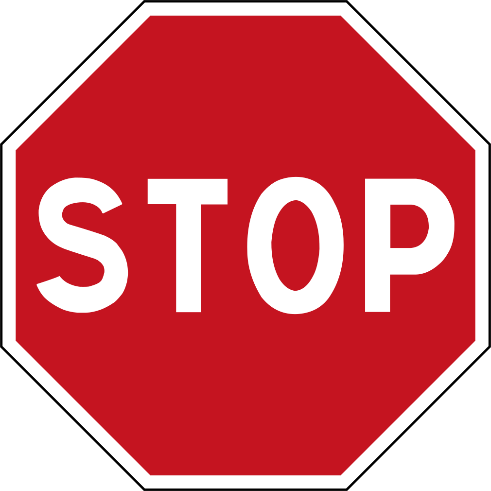


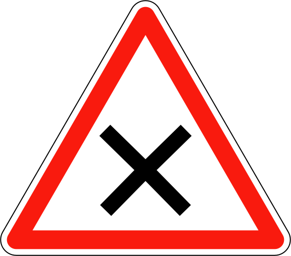
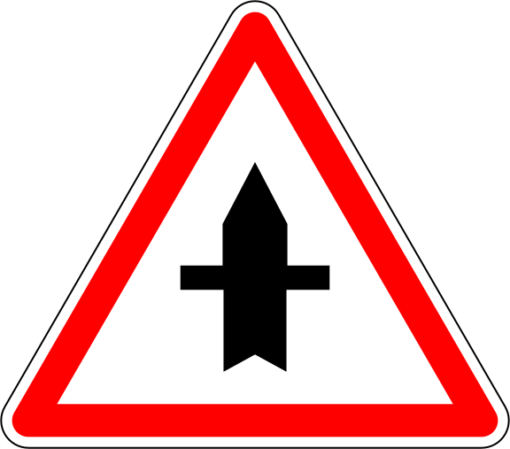
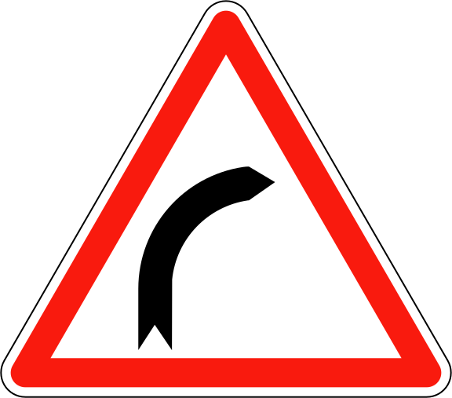
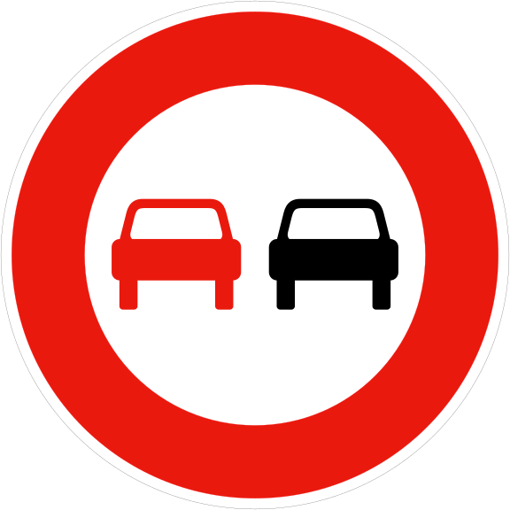
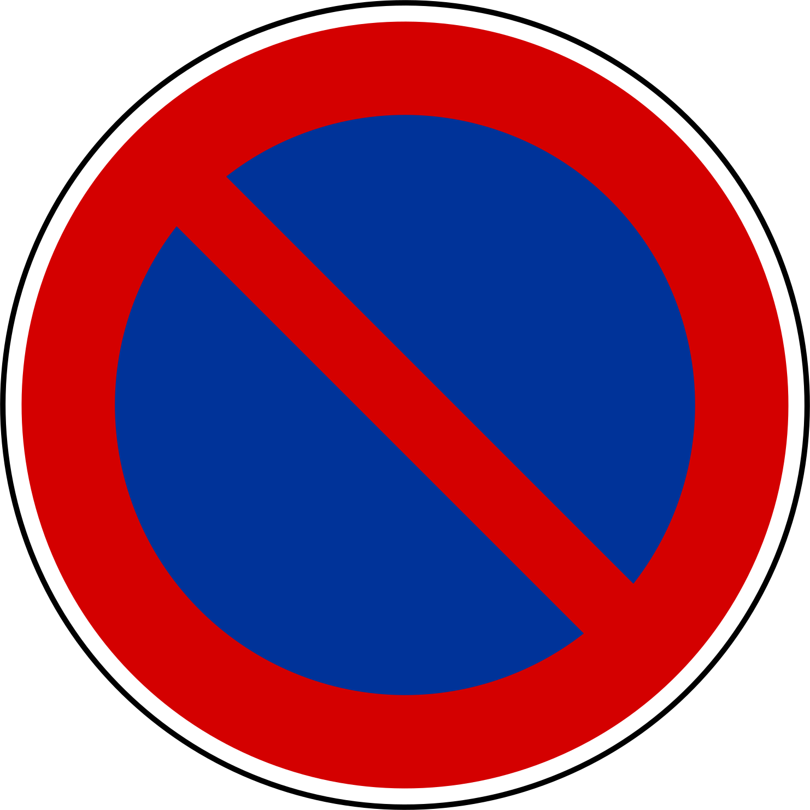
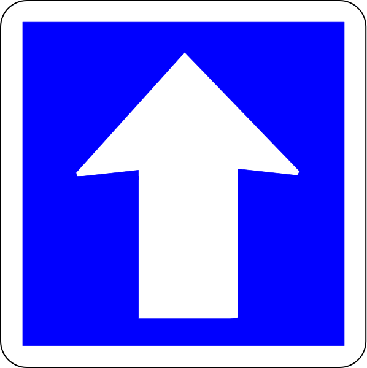
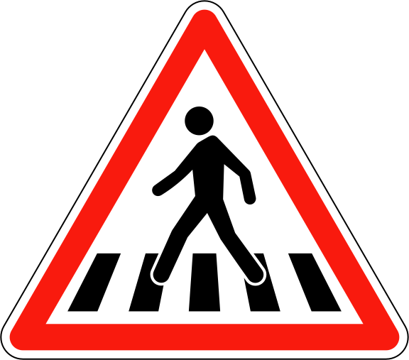

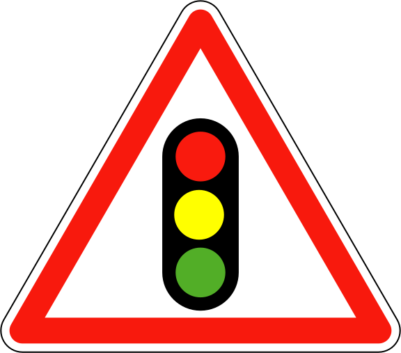
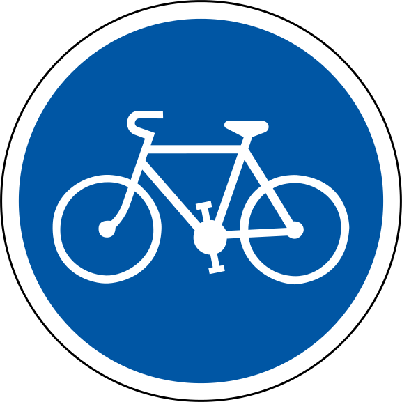
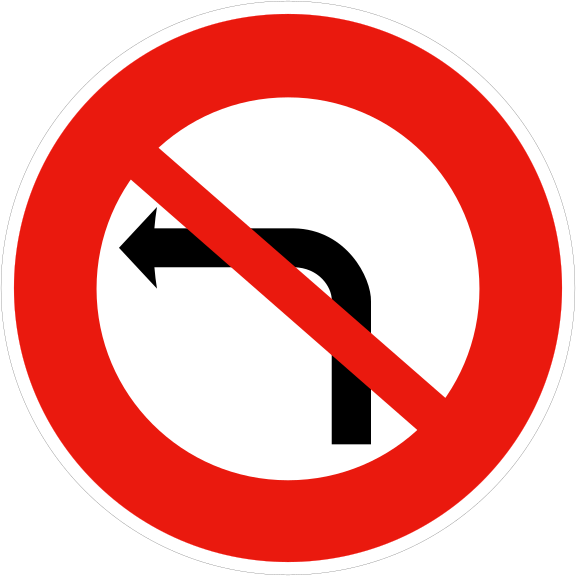
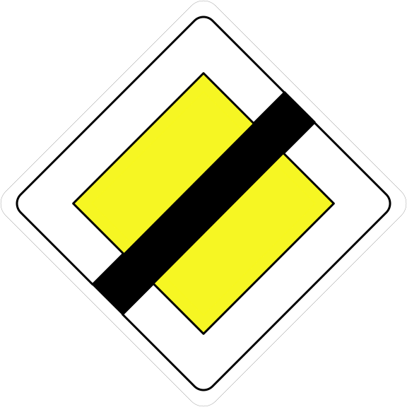
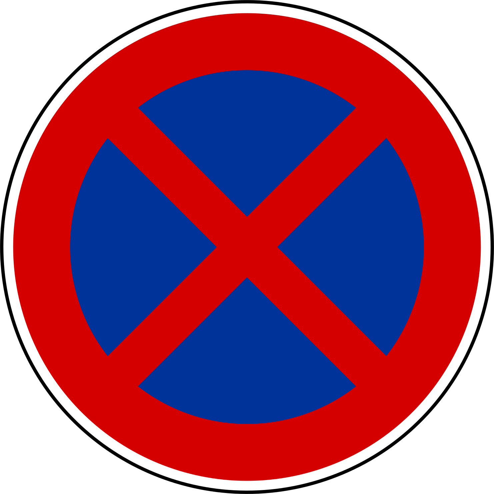
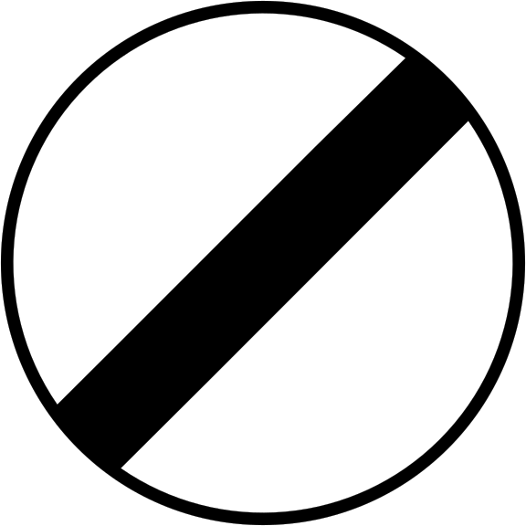
P
✓
Priorités de passage
Validé
P
✓
Panneaux de danger
Validé
Tu es ici
P
▶
Signalisation obligatoire
Commencer
P
Vitesses & distances
À venir
🔒
Conduite en ville
Verrouillé
Compétence 2 débloquée après validation des 10 premiers objectifs.